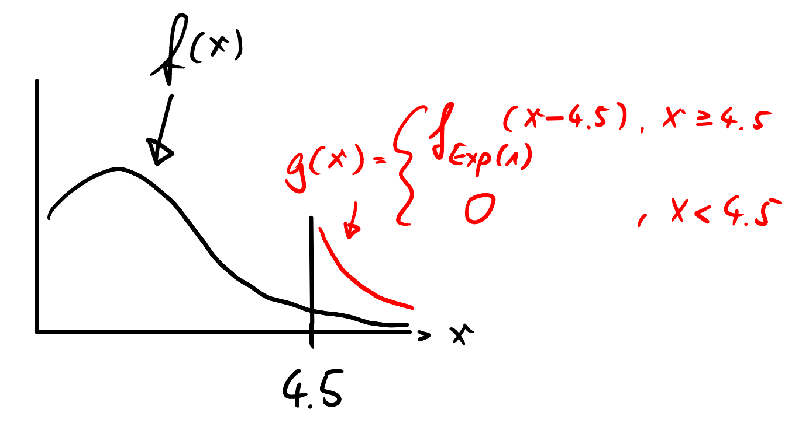

b <- 1
myfun <- function(x, b){sqrt(2/pi) * exp( (2*abs(x) - x^2 * b)/(2 * b) )}
xx <- seq(-(1/b)*3, (1/b)*3, len = 500)
yy <- myfun(xx, b = b)
plot(x = xx, y = yy, type = "l")
abline(v=c(-1/b, 1/b), lty=2)
b <- 1
myfun <- function(x, b){sqrt(2/pi) * exp( (2*abs(x) - x^2 * b)/(2 * b) )}
xx <- seq(-(1/b)*3, (1/b)*3, len = 500)
yy <- myfun(xx, b = b)
plot(x = xx, y = yy, type = "l")
abline(v=c(-1/b, 1/b), lty=2)
myfun2 <- function(b){b * exp( 1/(2*b^2) )}
bb <- seq(.5, 2, len = 500)
yy <- myfun2(b = bb)
plot(x = bb, y = yy, type = "l")
abline(v = 1, lty=2)
\[ \begin{align*} P\left(X \leq h (Y)\right) &=\mathbb{E}\left(1_{(X \leq h (Y))}\right)\\[2ex] &=\mathbb{E}\left[\mathbb{E}\left(1_{(X \leq h (Y))}|Y\right) \right]\\[2ex] &=\mathbb{E}\left[P\left(1_{(X \leq h (Y))}=1|Y\right)\cdot 1 + 0\right]\\[2ex] &=\mathbb{E}\left[\;\;P\left(X \leq h (Y)|Y\right)\;\;\cdot\; 1\; + 0\right]\\[2ex] &=\mathbb{E}\left[\;\;\int_{-\infty}^{h(Y)} f(x)dx \right]\\[2ex] &=\mathbb{E}\left[\mathbb{E}\left[\left.\;\;\int_{-\infty}^{h(Y)} f(x)dx\right| Y \right]\right]\\[2ex] &=\int_{-\infty}^{\infty} \;\;\left(\int_{-\infty}^{h (y)} f(x) dx \right) \quad g(y) dy \end{align*} \]
One can provide a graphical solution as following:

Alternatively, one can do the following derivations:
\[ \begin{align*} P\left(U\leq f_X(Y)\right) &=\int_a^b\left(\int_0^{f_X(y)}\frac{1}{m}du\right)\frac{1}{b-a}dy\\[2ex] &=\frac{1}{m}\cdot\frac{1}{b-a}\int_a^b\left(\int_0^{f_X(y)}\;1\;du\right)\;dy\\[2ex] &=\frac{1}{m}\cdot\frac{1}{b-a}\int_a^b f_X(y) dy\\[2ex] &=\frac{1}{m}\cdot\frac{1}{b-a}\cdot 1 \end{align*} \]